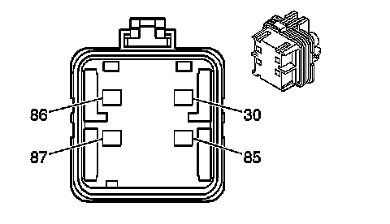
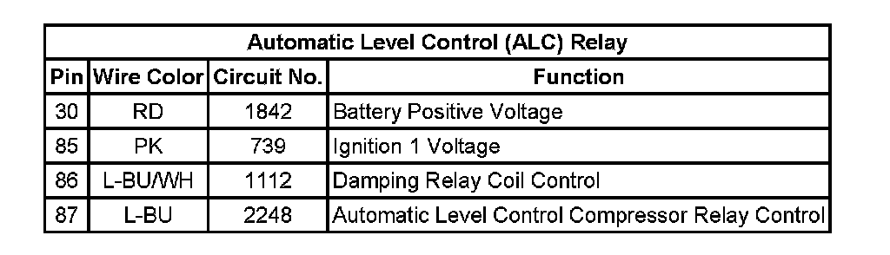

Operation CHARM
: Car repair manuals for everyone.
Home
>>
Cadillac
>>
2007
>>
Escalade ESV AWD V8-6.2L
>>
Repair and Diagnosis
>>
Relays and Modules
>>
Relays and Modules - Steering and Suspension
>>
Relays and Modules - Suspension
>>
Compressor/Pump Relay
>>
Diagrams
Compressor/Pump Relay: Diagrams
Automatic Level Control Connector End Views
Automatic Level Control (ALC) Relay

Automatic Level Control (ALC) Relay:
